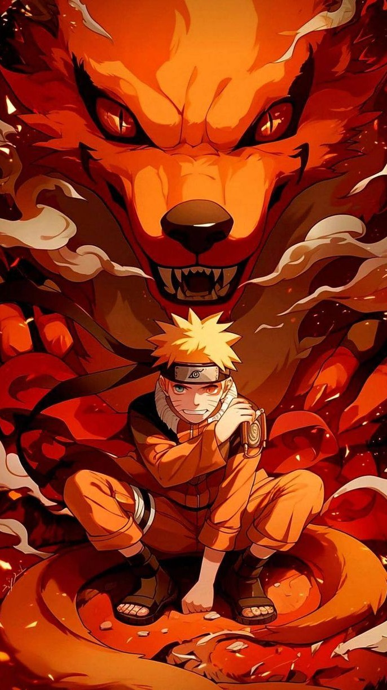

About NarutoNaruto is a Japanese anime and manga series created by Masashi Kishimoto. It follows Naruto Uzumaki, a spirited and lonely ninja who dreams of becoming the Hokage—the strongest ninja and leader of his village—to earn the respect and love of others.
|
||
Uzumaki NarutoUzumaki Naruto is the full name of the main protagonist of the Naruto series. He’s a spirited and resilient ninja from the Hidden Leaf Village who grows up as an outcast because he carries the fearsome Nine-Tailed Fox (Kurama) sealed inside him.
|
Uchiha SasukeSasuke Uchiha is one of the main characters in the Naruto series and Naruto’s closest friend—and rival. He’s a member of the prestigious Uchiha clan, known for their powerful Sharingan eye technique. Sasuke’s childhood is marked by tragedy: his older brother, Itachi, massacred their entire clan, leaving Sasuke driven by revenge. This dark mission leads him down a complex path—sometimes fighting alongside Naruto and their friends, other times going rogue to seek power at any cost. He’s skilled, calm, and incredibly talented, mastering powerful jutsu like Chidori and evolving his Sharingan into the legendary Mangekyo Sharingan. Sasuke’s story is about struggle, redemption, and finding his true path beyond vengeance, making him one of the most compelling and conflicted characters in the series. |
|
Why you should watch NarutoPeople should watch Naruto because it’s a powerful coming-of-age story packed with unforgettable characters, intense ninja battles, and deep emotional themes. Here’s why it’s worth watching:
Whether you love action, character-driven stories, or themes of friendship and resilience, Naruto delivers a compelling and inspiring anime experience. |
||